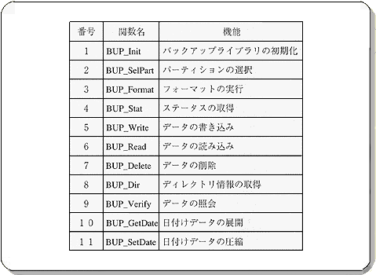

Return to previous page | Return to menu | Go to next page
Next, the flow of the sample program that uses the backup library is shown in the flowchart.

Listing 13-1 shows a sample program listing.
Table 13-2 lists the functions used in the backup library.
Please refer to PROGRAMMER'S GUIDE VOL.1 for a detailed function reference.
